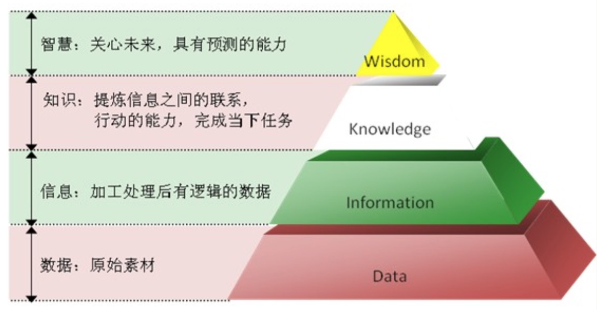

DIKW 体系
DIKW体系是关于数据、信息、知识及智慧的体系，可以追溯至托马斯·斯特尔那斯·艾略特所写的诗--《岩石》。在首段，他写道：“我们在哪里丢失了知识中的智慧？又在哪里丢失了信息中的知识？”（Where is the wisdom we have lost in knowledge？ / Where is the knowledge we have lost in information？）。
1982年12月，美国教育家哈蓝·克利夫兰引用艾略特的这些诗句在其出版的《未来主义者》一书提出了“信息即资源”（Information as a Resource）的主张。
其后，教育家米兰·瑟兰尼、管理思想家罗素·艾可夫进一步对此理论发扬光大，前者在1987年撰写了《管理支援系统：迈向整合知识管理》（Management Support Systems: Towards Integrated Knowledge Management ），后者在1989年撰写了《从数据到智慧》（“From Data to Wisdom”，Human Systems Management）。

数据工程领域中的DIKW体系
D：Data (数据)，是 DIKW 体系中最低级的材料，一般指原始数据，包含（或不包含）有用的信息。
I：Information (信息)，作为一个概念，信息有着多种多样的含义。在数据工程里，表示由数据工程师（使用相关工具）或者 数据科学家（使用数学方法），按照某种特定规则，对原始数据进行整合提取后，找出来的更高层数据（具体数据）。
K：Knowledge (知识)，是对某个主题的确定认识，并且这些认识拥有潜在的能力为特定目的而使用。在数据工程里，表示对信息进行针对性的实用化，让提取的信息可以用于商业应用或学术研究。
W：Wisdom (智慧)，表示对知识进行独立的思考分析，得出的某些结论。在数据工程里，工程师和科学家做了大量的工作用计算机程序尽可能多地提取了价值（I/K），然而真正要从数据中洞察出更高的价值，甚至能够对未来的情况进行预测，则需要数据分析师。
数据工程 领域职业划分：
数据工程是一整套对数据（D）进行采集、处理、提取价值（变为 I 或 K）的过程。
首先介绍一下相关的几种角色： Data Engineer（数据工程师）, Data Scientist（数据科学家）, Data Analyst（数据分析师）。 这三个角色任务重叠性高，要求合作密切，但各负责的领域稍有不同。大部分公司里的这些角色都会根据每个人本身的技能长短而身兼数职， 所以有时候比较难以区分：
Data Engineer 数据工程师： 分析数据少不了需要运用计算机和各种工具自动化数据处理的过程， 包括数据格式转换， 储存， 更新， 查询。 数据工程师的工作就是开发工具完成自动化的过程， 属于 基础设施/工具（Infrastructure/Tools）层。但是这个角色出现的频率不多 ，因为有现成的MySQL, Oracle等数据库技术， 很多大公司只需要DBA就足够了。而 Hadoop, MongoDB 等 NoSQL 技术的开源， 更是使在大数据的场景下都没有太多 数据工程师 的事，一般都是交给 数据科学家 。
Data Scientist 数据科学家： 数据科学家是与数学相结合的中间角色， 需要用数学方法处理原始数据找出肉眼看不到的更高层数据， 一般是运用 统计机器学习（Statistical Machine Learning）或者 深度学习（Deep Learning）。有人称 Data Scientist 为
编程统计学家（Programming Statistician），因为他们需要有很好的统计学基础，但也需要参与程序的开发（基于 Infrastructure 之上），而现在很多很多的数据科学家职位都要求身兼数据工程师。数据科学家是把 D 转为 I 或 K 的主力军。
Data Analyst 数据分析师： 数据工程师和数据科学家做了大量的工作，用计算机程序尽可能多地提取了价值（I/K），然而真正要从数据中洞察出更高的价值， 则需要依靠丰富的行业经验和洞察力， 这些都需要人力的干预。Data Analyst 需要的是对所在业务有深刻了解， 能熟练运用手上的工具（无论是 Excel， SPSS也好， Python/R也好，工程师给你开发的工具也好，必要时还要能自己充当工程师和科学家，力尽所能得到自己需要的工具），有针对性地对数据作分析，并且需要把发现的成果向其他职能部门呈现出来，最终变为行动，这就是把数据最终得出 Wisdom。
什么是数据分析：
百度百科：数据分析是指用适当的统计分析方法对收集来的大量数据进行分析，提取有用信息和形成结论而对数据加以详细研究和概括总结的过程。这一过程也是质量管理体系的支持过程。在实用中，数据分析可帮助人们作出判断，以便采取适当行动。
数据分析的过程：
1. 数据收集：本地数据或者网络数据的采集与操作.
2. 数据处理：数据的规整，按照某种格式进行整合存储。
3. 数据分析：数据的科学计算，使用相关数据工具进行分析。
4. 数据展现：数据可视化，使用相关工具对分析出的数据进行展示。
数据分析的工具：
SAS：SAS（STATISTICAL ANALYSIS SYSTEM，简称SAS）公司开发的统计分析软件，是一个功能强大的数据库整合平台。价格昂贵，银行或者大企业才买的起，做离线的分析或者模型用。SPSS：SPSS（Statistical Product and Service Solutions，统计产品与服务解决方案）是IBM公司推出的一系列用于统计学分析运算、数据挖掘、预测分析和决策支持任务的产品，迄今已有40余年的成长历史，价格昂贵。R/MATLAB：适合做学术性质的数据分析，在实际应用上需要额外转换为Python或Scala来实现，而且MATLAB（MathWorks公司出品的商业数学软件）是收费的。Scala：是一门函数式编程语言，熟练使用后开发效率较高，配合Spark适合大规模的数据分析和处理，Scala的运行环境是JVM。Python：Python在数据工程领域和机器学习领域有很多成熟的框架和算法库，完全可以只用Python就可以构建以数据为中心的应用程序。在数据工程领域和机器学习领域，Python非常非常流行。